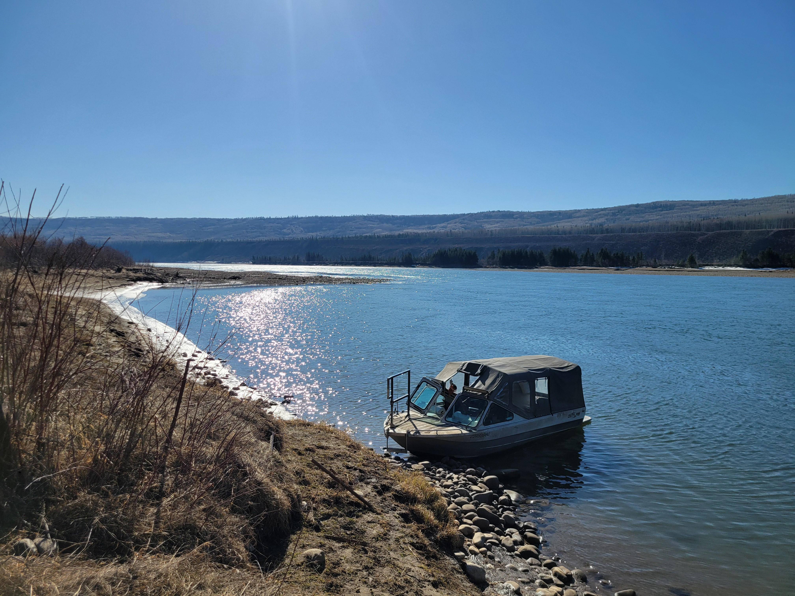
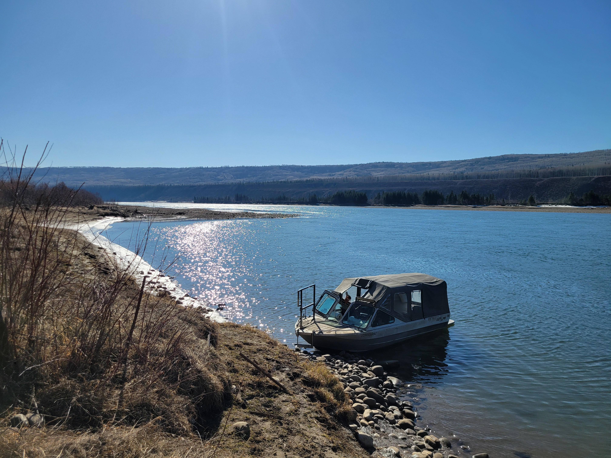
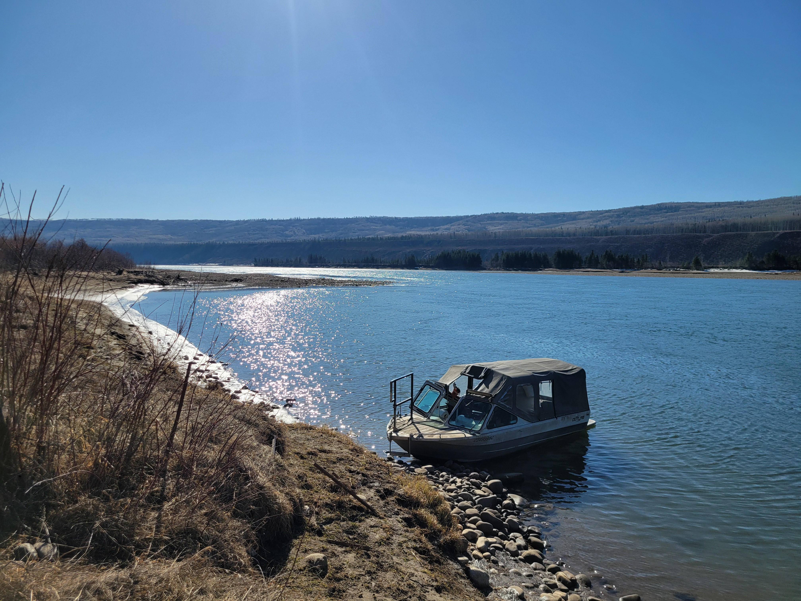

Background
Since 2019, BC Hydro has tagged six fish species (Bull Trout, Arctic Grayling, Rainbow Trout, Walleye, Mountain Whitefish and Burbot) with radio transmitters to assess movement patterns in the Peace River and its tributaries. Tagged fish are detected at an array of fixed receivers located throughout the Peace River and its tributaries (see Map tab) as well as during mobile surveys by fixed-wing aircraft or helicopter. Fixed receivers are operated from April through October and data are downloaded monthly. Mobile surveys target Arctic Grayling in the Moberly River from May to June and Bull Trout in the Halfway River from August to September to identify likely spawning locations and movement timing. Mobile surveys are also conducted throughout the watershed several times during winter months to supplement detection data while the majority of the fixed-receiver array is offline. Additional information on the Site C Fish Movement Assessment can be found in the Site C Fish Tracking Brochure and 2022 Fish Tracking Notification.
Shiny App
This Shiny application offers two visualizations of the detection data, individual movements and seasonal distribution. The Individual Movements map plots detection locations for select individual fish through time. The Seasonal Distribution map shows counts of unique individuals at detection locations during either weekly or monthly time intervals with circles sized proportionally to the number of individuals detected. Detection locations are colored to distinguish release locations, detections at fixed stations, mobile survey detections, and PIT tag detections.
Annual Reports
